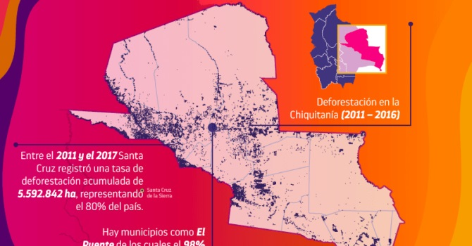
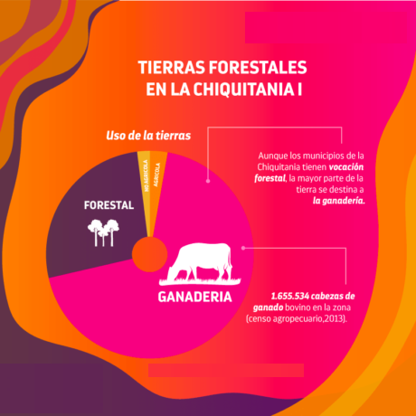

Territorio o Terreno:
El avance de la actividad forestal representa una de las amenazas a la estabilidad de la Chiquitanía como ecorregión en Bolivia. Entre los años 2006 y 2016 se han desmontado 403.090 hectáreas, sin tomar en cuenta las superficies desmontadas ilegalmente.Los principales municipios afectados son San Ignacio de Velasco y San José de Chiquitos, que juntos representan casi el 60% de la superficie desmontada en ese periodo, y más del 50% de toda la Chiquitanía el 2016.
La superficie desmontada se incrementa entrelos años 2013 y 2019, periodo en el que se evidencia un mayor registro de autorizaciones de áreas de desmonte en la Chiquitania.Entre 2006 y 2016, la Chiquitanía representó el 56.7% del total de la superficie desmontada en el departamento de Santa Cruz. Santa Cruz y la Chiquitanía han sufrido intensos procesos de deforestación, tanto por autorizaciones de desmonte para manejo forestal legal, como por la tala ilegal. Este departamento registró una tasa de deforestación acumulada, entre el 2011 y el 2019, de 5.592.842 ha, representando el 80% del país (ABT, 2018). El mapa muestra la deforestación en la Chiquitanía entre el año 2011 y 2016. Es destacable el caso del municipio de El Puente, donde, en el referido año, registra el 98% de la deforestación (ABT, 2018).Es importante destacar que en el año 2016 se desarrolla la Cumbre Sembrando Bolivia, en la que se acordó la generación de políticas que favorecieron a la deforestación. Una de estas políticas se materializó en el incremento de superficies de desmonte de 5 a 20 hectáreas en propiedades pequeñas y comunales, pero se evidencia aumento de desmonte en grandes propiedades.

Las tierras forestales en la Chiquitanía:
Los municipios de la Chiquitanía tienen vocación forestal y, por ello, una importante parte de su superficie se enfoca a esta actividad. Destacan los municipios de Concepción y San Ignacio de Velasco por la extensión en cuanto a tierras de producción forestal permanente.
Pese a esta condición, es importante saber que la mayor parte de la tierra en la Chiquitania está destinada a la actividad ganadera, conteniendo una mayor proporción de pastos naturales en relación a los pastos cultivados. El censo agropecuario de 2013 determinó que en los municipios chiquitanos existen alrededor de 1.655.534 cabezas de ganado bovino. En lo que respecta al suelo con aptitud forestal, se tienen registradas varias concesiones forestales que están vinculadas a esta cualidad, además de otros elementos en torno al aprovechamiento de estos recursos. Las concesiones forestales se denominan Autorizaciones Transitorias Especiales. Para 2018 la mancomunidad de municipios chiquitanos tenía 42 ATEs, de las cuales, en ese periodo, 27 estaban vigentes y las restantes en caducidad o renuncia.
